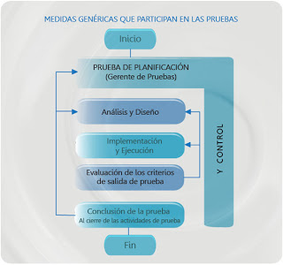

Proceso Básico de pruebas

El proceso de pruebas básicos consta de las siguientes principales:
1. Planificación y Control.
2. Análisis y diseño.
3. Implementación y ejecución.
4. Evaluación de los criterios de salida e informes.
5. Actividades de cierre de pruebas.
A pesar de tener una secuencia lógica, las actividades del proceso pueden solaparse o realizarse a la vez. Normalmente es necesario adaptar estas actividades al contexto del sistema y del proyecto.
El proceso de pruebas incluye superposición y vuelta atrás (backtracking). Cada fase del proceso de pruebas tiene lugar de forma concurrente con las fases del proceso de desarrollo de software.
En el siguiente video explicativo se mostrara de manera detallada el proceso básico de pruebas, desde su planificación, análisis, diseño, evaluación y cierre.
Ver Video